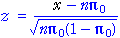

Computational problem
To find the p-value for a hypothesis test about a proportion, tail probabilities for a binomial distribution must be summed.
If the sample size n is large, there may be a huge number of probabilities to add together and this is both tedious and may result in numerical errors.
Adverse reactions to drug
A pharmaceutical company claims that only 1% of the users of a certain drug experience adverse reactions. To test its claim, an agency monitors 2500 patients taking the drug and observes adverse reactions in 37 cases. Is the occurrence of adverse reactions more common than claimed by the company?
This question can be expressed as a hypothesis test. If the population proportion of patients with adverse reactions is denoted by π, the hypotheses can be written as...
H0 : π = 0.01
HA : π > 0.01
If the null hypothesis is true, the sample number with adverse reactions will have a binomial distribution with parameters n = 2500 and π = 0.01. The p-value for the test is therefore the sum of binomial probabilities,
p-value = P(X ≥ 37) = P(37) + P(38) + ... + P(2499) + P(2500)
A lot of probabilities must be evaluated and summed! And all are close to zero.
Normal approximation
We saw earlier that the normal distribution may be used as an approximation to the binomial when n is large. Both the sample proportion of successes, p, and the number of successes, x = np, are approximately normal when n is large.
The best-fitting normal distribution can be used to obtain an approximation to any binomial tail probability. In particular, it can be used to find an approximate p-value for a hypothesis test.
Approximate p-value
A large random sample of size n is selected from a population with probability π of success and x successes are observed. We will again test the hypotheses
H0 : π = π0
HA : π < π0
The normal approximation to the distribution of x can be used to find the tail probability,

Adverse reactions to drug
In this example, 37 out of 2,500 patients were found to have adverse reactions. The p-value for testing whether the pharmaceutical company's claim (that only 1% of patients with adverse reactions) is the probability of 37 or more.
The sample size is large, so we can use a normal approximation to obtain this probability assuming that the underlying population probability is 0.01(the null hypothesis).
Click Accumulate then simulate sampling of 2,500 patients about 300 times. (Hold down the button Simulate.) From the simulation, it is clear that the probability of obtaining 37 or more patients with adverse reactions is very small — there is strong evidence against the null hypothesis.
The same conclusion can be reached without a simulation.
Select Bar chart from the pop-up menu, then select Normal approximation. From the normal approximation, we can determine that the p-value for the test (the tail area above 37) is very small.
Continuity correction (advanced)
The approximate p-value was found above by comparing the z-score for x,

with a standard normal distribution. Since x is discrete,
P(X ≥ 37) = P(X ≥ 36.5) = P(X ≥ 36.1) = ...
To find this tail probability, any value of x between 36 and 37 might have been used when evaluating the z-score. The p-value can be more accurately estimate by using 36.5. This is called a continuity correction.
The continuity correction involves either adding or subtracting 0.5 from the observed count, x, before finding the z-score.
Be careful about whether to add or subtract — the probability statement should be unchanged. For example, P(X ≤ 410) = P(X ≤ 410.5), so 0.5 should be added to x = 410 as a continuity correction in order to find this probability using a normal approximation and z-score.
The continuity correction is most important when the observed count is near either 0 or n.